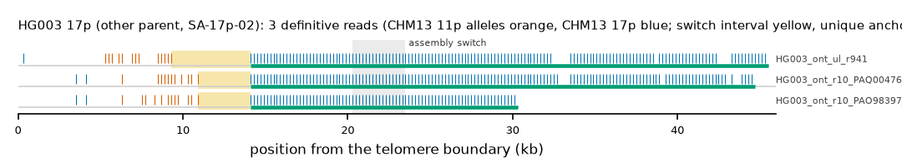

HG003 17p (other_parent (HG002 maternal)): SA-17p-02
Claim HG003|HG002#2#chr17_MATERNAL#L. All claims
- cohort
- HG003/HG004 (trio)
- individual
- HG003
- haplotype
- other_parent (HG002 maternal)
- arm
- 17p
- allele
- SA-17p-02 (foreign)
- model
- donor CHM13 11p, proximal CHM13 17p, recipient CHM13 17p, pattern DP
- claimed end(s)
HG002#2#chr17_MATERNAL#L- assembly switch
- 16,501 bp from the telomere boundary; on CHM13 chr17:5615; own-window projection 20300-23500 bp
- v1 verdict
- confirmed (other_parent)
- definitive tier
- definitive (>= 2 datasets)
- reads
- 6 conclusive switch-concordant, 0 discordant, 0 contradicting, 9 consistent; 3 definitive (HG003_ont_r10_PAO98397_289a47d8,HG003_ont_r10_PAQ00476_291af615,HG003_ont_ul_r941)
- by tier
- definitive:3;conclusive_unique_anchor_off_end:3;consistent:9
- source
- GIAB HG003/HG004 public long-read alignments (HiFi on CHM13 v2.0; ONT on GRCh38)
- note
- (other parent: reported only)

Conclusive and contradicting reads (6)
9 further reads are consistent (switch test passed, but no terminal telomere, anchor or integrity); they are
listed in reads.tsv.gz. Switch: 95% interval in subtelomere coordinates (kb from the
telomere boundary) and projected on CHM13 17p. Each samtools command prints the read's record
from its public file (CRAM: add the CHM13 v2.0 FASTA as -T).
| read | dataset | tier | length | switch (subtelomere, kb) | switch on CHM13 | donor units / purity | proximal units / purity | anchor (CHM13, MAPQ, unique) | own-assembly best end | fetch |
|---|---|---|---|---|---|---|---|---|---|---|
7dc0d0d6-3aed-440f-868b-423a93234167 | HG003_ont_r10_PAO98397_289a47d8 | definitive | 34,905 | 10.9-14.1 | chr17:12125-15325 | 14 / 0.86 | 81 / 1.00 | chr17:15325-34059, 60, 18.7 kb | HG002#2#chr17_MATERNAL#L (74.9%) ✓ | samtoolssamtools view -F 0x900 -T GRCh38_no_alt_analysis_set.fa -X 'https://ont-open-data.s3.amazonaws.com/giab_2023.05/analysis/hg003/sup/PAO98397_289a47d8.pass.cram' 'https://ont-open-data.s3.amazonaws.com/giab_2023.05/analysis/hg003/sup/PAO98397_289a47d8.pass.cram.crai' 'chr17:60001-113251' | awk -v r='7dc0d0d6-3aed-440f-868b-423a93234167' '$1==r' |
6655d7c5-3654-4ba2-bbcf-0abc6a7efeb7 | HG003_ont_r10_PAQ00476_291af615 | definitive | 66,821 | 10.9-14.1 | chr17:12128-15328 | 13 / 0.85 | 146 / 1.00 | chr17:15329-47801, 60, 32.5 kb | HG002#2#chr17_MATERNAL#L (60.4%) ✓ | samtoolssamtools view -F 0x900 -T GRCh38_no_alt_analysis_set.fa -X 'https://ont-open-data.s3.amazonaws.com/giab_2023.05/analysis/hg003/sup/PAQ00476_291af615.pass.cram' 'https://ont-open-data.s3.amazonaws.com/giab_2023.05/analysis/hg003/sup/PAQ00476_291af615.pass.cram.crai' 'chr17:60001-113251' | awk -v r='6655d7c5-3654-4ba2-bbcf-0abc6a7efeb7' '$1==r' |
bef7e5fe-07d6-44c3-a040-6fa1f80ae08a | HG003_ont_ul_r941 | definitive | 55,859 | 9.3-14.1 | chr17:10452-15252 | 14 / 0.93 | 147 / 1.00 | chr17:15254-49067, 60, 33.8 kb | HG002#2#chr17_MATERNAL#L (58.1%) ✓ | samtoolssamtools view -F 0x900 -X 'https://ftp-trace.ncbi.nlm.nih.gov/ReferenceSamples/giab/data/AshkenazimTrio/HG003_NA24149_father/UCSC_Ultralong_OxfordNanopore_Promethion/HG003_GRCh38_ONT-UL_UCSC_20200508.bam' 'https://ftp-trace.ncbi.nlm.nih.gov/ReferenceSamples/giab/data/AshkenazimTrio/HG003_NA24149_father/UCSC_Ultralong_OxfordNanopore_Promethion/HG003_GRCh38_ONT-UL_UCSC_20200508.bam.bai' 'chr17:60001-113251' | awk -v r='bef7e5fe-07d6-44c3-a040-6fa1f80ae08a' '$1==r' |
8aed80fa-f667-4935-8f18-17395522cd8f | HG003_ont_r10_PAO98397_289a47d8 | conclusive, places on another end | 46,463 | 10.7-14.1 | chr17:11925-15325 | 14 / 0.86 | 106 / 1.00 | chr17:15326-39389, 60, 24.1 kb | HG002#1#chr17_PATERNAL#L (52.1%) (not claimed end) | samtoolssamtools view -F 0x900 -T GRCh38_no_alt_analysis_set.fa -X 'https://ont-open-data.s3.amazonaws.com/giab_2023.05/analysis/hg003/sup/PAO98397_289a47d8.pass.cram' 'https://ont-open-data.s3.amazonaws.com/giab_2023.05/analysis/hg003/sup/PAO98397_289a47d8.pass.cram.crai' 'chr17:60001-113251' | awk -v r='8aed80fa-f667-4935-8f18-17395522cd8f' '$1==r' |
07d10604-0624-42e0-8e6d-1c89de87754c | HG003_ont_ul_r941 | conclusive, places on another end | 66,700 | 22.5-22.7 | chr17:11439-11639 | 47 / 0.98 | 191 / 1.00 | chr17:10821-68800, 60, 58.0 kb | HG002#1#chr17_PATERNAL#L (93.7%) (not claimed end) | samtoolssamtools view -F 0x900 -X 'https://ftp-trace.ncbi.nlm.nih.gov/ReferenceSamples/giab/data/AshkenazimTrio/HG003_NA24149_father/UCSC_Ultralong_OxfordNanopore_Promethion/HG003_GRCh38_ONT-UL_UCSC_20200508.bam' 'https://ftp-trace.ncbi.nlm.nih.gov/ReferenceSamples/giab/data/AshkenazimTrio/HG003_NA24149_father/UCSC_Ultralong_OxfordNanopore_Promethion/HG003_GRCh38_ONT-UL_UCSC_20200508.bam.bai' 'chr17:60001-113251' | awk -v r='07d10604-0624-42e0-8e6d-1c89de87754c' '$1==r' |
8ee65a67-de90-4a73-a5d0-dfbb95f8e20a | HG003_ont_ul_r941 | conclusive, places on another end | 62,640 | 21.3-26.5 | chr17:10047-15247 | 37 / 0.84 | 177 / 0.99 | chr17:29787-66018, 60, 36.2 kb | HG002#1#chr17_PATERNAL#L (93.3%) (not claimed end) | samtoolssamtools view -F 0x900 -X 'https://ftp-trace.ncbi.nlm.nih.gov/ReferenceSamples/giab/data/AshkenazimTrio/HG003_NA24149_father/UCSC_Ultralong_OxfordNanopore_Promethion/HG003_GRCh38_ONT-UL_UCSC_20200508.bam' 'https://ftp-trace.ncbi.nlm.nih.gov/ReferenceSamples/giab/data/AshkenazimTrio/HG003_NA24149_father/UCSC_Ultralong_OxfordNanopore_Promethion/HG003_GRCh38_ONT-UL_UCSC_20200508.bam.bai' 'chr17:60001-113251' | awk -v r='8ee65a67-de90-4a73-a5d0-dfbb95f8e20a' '$1==r' |
Files
CRAM/BAM on CHM13 v2.0, BAM on the person's own assembly windows and the window FASTA: release asset subtel_read_evidence_v1_HG002_trio.tar.gz, directory read_evidence_v1/HG002_trio/HG003__HG002_2_chr17_MATERNAL_L/ (downloads).
Re-derive this verdict
git clone https://github.com/jlanej/human-subtelomere-atlas && cd human-subtelomere-atlas
evidence/replicate_claim.sh 'HG003|HG002#2#chr17_MATERNAL#L'The script fetches the cited reads from the public source by region and read ID, re-runs the frozen criteria and compares every per-read and claim verdict with this page (details).